“科研之友”常见问题
一般问题:
社区网络服务:
跨文献库检索工具的安装和卸载
- 什么是跨文献库检索工具？
- 为什么需要安装跨文献库检索工具？是否每次检索都要安裝？
- 如何安装跨文献库检索工具？
- 如何卸载跨文献库检索工具？
- 如何升级跨文献库检索工具？
- 跨文献库检索工具系统需求和支持的浏览器有哪些？
- 已经安装了检索工具，仍出现安装提示怎么办？
- 系统无法安装跨文献库检索工具怎么办？
跨文献库检索工具使用
- 检索速度很慢或者长时间没有响应，如何解决？
- 检索时，为何系统提示“您没有权限使用该数据库”？
- 检索时，为何系统提示“您所选数据库正在维护中”？
- 检索成果时，为何系统出现浏览器脚本错误，提示“指定资源下载失败”？
- 检索时，为何系统提示“操作超时，请点击此处重试”？
- 检索时，为何系统提示“您所选数据库返回结果异常”？
- 检索时，为何系统提示“查询异常，可能是服务器暂时无法连接”？
- 如何检索SCI、SSCI、ISTP、EI和中国期刊网之外的其它文献库？
- 跨文献库检索工具收集的成果，是否会存在版权方面的问题？
- 为什么跨文献库检索工具检索不到我的论文或其他成果？
- 跨文献库检索工具是否能够检索尚未出版，但已被接受的科研成果？
- 为何无法看到系统教程和帮助中的检索进度条？
- 如果成果导入不成功，如何解决？
- 如果导入过程出现IE错误提示，如何解决？
- 如果导入过程中出现“数据提交不成功”的情况，如何解决？
其 他
一般问题:
1.如何找回登录密码？
在“科研之友”的登录页面上，您可以点击“忘记密码”链接 ，输入您在注册时所填的电子邮箱。系统将会自动把修改密码的链接发送到您的电子邮箱。
2.什么是“科研之友”的系统要求？
“科研之友”适用于以下最新版本浏览器的Windows或Mac操作系统：
Windows: Mozilla Firefox Internet Explorer 11 Google Chrome Opera
Mac: Mozilla Firefox Safari Google Chrome Opera
为了更好的展示您的图形化智能简历、互动式个人主页，我们建议您将电脑显示器的分辨率设置成1024x768或以上，把字体大小设置 成中等字体。
社区网络服务:
1. 如何设置我的隐私？
登录“科研之友”后，您可以在“我的科研 个人设置”功能下的“隐私设置”中设置隐私内容。公开您的成果、项目等个人信息，获得更多人查看，并有助于提高论文引用，获取更多基金申请机会推荐。
2. 接收者为何没收到我发送的加为好友请求？
对方没有回应您的好友请求可能有以下原因：
1.对方没有收到您通过“科研之友”发出的好友请求，或标识为“垃圾邮件”。您可以尝试给对方“发送消息”，核对是否收到了添加好友请求。
2.科研之友每周会发送邮件通知对方处理尚未回应的请求或邀请。若对方处理了该请求，您会收到科研之友发出的系统通知，请注意查看科研之友“消息中心”下的“系统消息”栏。
3.如果上述仍然不能回答您的疑问，请联系本系统的“在线咨询”，或者发电子邮件至我们的技术支持support@scholarmate.com寻求帮助。
3. 如何退出群组？
如您想退出已经加入的群组，可在登录系统后，进入“群组”功能选择该群组，然后点击右上角的“设置”链接，选择“退出群组”选项。
4. 什么是消息中心？
消息中心包括您与科研之友好友互发的站内短信、科研之友用户申请加入您创建的群组请求、给您发送的好友请求、好友给您共享的文件/文献和系统消息。您可以通过访问消息中心查找与好友的交流记录，曾经收到的站内短信和文件等重要资料。
跨文献库检索工具的安装和卸载:
1. 什么是跨文献库检索工具？
跨文献库检索工具是依托“科研之友”平台，辅助科研工作者统一文献检索，跨库收集科研成果的科技文献检索软件。利用跨文献库检索工具，。您可以使用跨文献库检索工具从各大文献库，如：中国知网、万方、SSCI、SCIE、ISTP、Scopus等，方便、准确、规范地收集和导入自己或他人的中英文科研成果信息。列出目前支持的文献库类型。
2. 为什么需要安装跨文献库检索工具？是否每次检索都要安裝?
有效支持科研人员在知识产权法等相关法律的框架下方便、准确、规范地收集科研成果，需要一系列复杂的科技文献检索技术，这些技术远远超出了现在浏览器能够处理的能力，所以用户需要在自己电脑上下载并安装跨文献库检索工具。该工具作为浏览器的插件，安全、可靠，请用户放心下载。
不是每次检索都需要安装跨文献库检索工具，如果有最新的跨文献库检索工具发布，系统会主动提示用户升级到最新版的跨文献库检索工具。请按照屏幕提示操作进行升级。
3.1 哪些浏览器支持安装跨文献库检索工具？
目前科研之友跨库检索插件仅支持:IE11,360浏览器
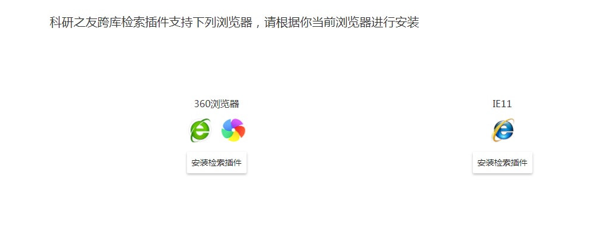
3.2 如何安装跨文献库检索工具(IE)？
（1）进入检索页面后，系统会主动提示用户安装跨文献库检索工具，请点击【确定】按钮开始安装跨文献库检索工具。
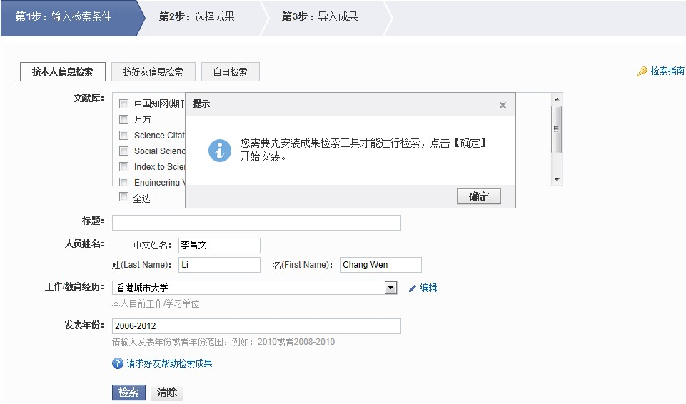
（2）点击安装检索插件按钮。
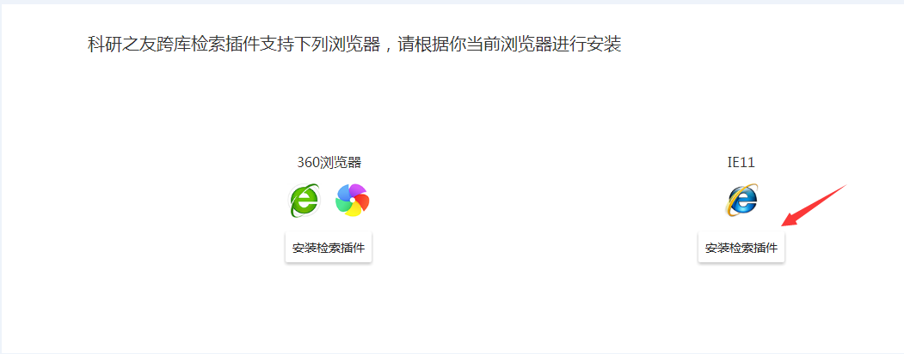
（3）点击【运行】按钮运行跨文献库检索工具。
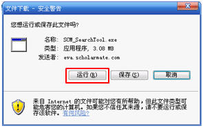
（4）如果您的网页浏览器的安全警告提示是否要运行跨文献库检索工具，请点击【运行】按钮继续安装。
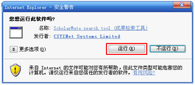
（5）点击【下一步】按钮继续跨文献库检索工具安装进程。
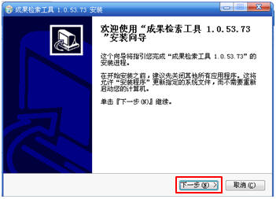
（6）正在进行安装程序冲突检查，如有检测到程序冲突请根据提示关闭有关程序然后继续安装进程,若无程序冲突请点击【安装】按钮继续安装。

（7）点击【完成】按钮完成跨文献库检索工具的安装。
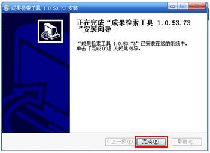
3.3 如何在360浏览器上使用跨文献库检索工具？
（1）进入检索页面后，系统会主动提示用户安装跨文献库检索工具，请点击【确定】按钮跳转到安装跨文献库检索工具页面。
（2）点击安装检索插件按钮，跳转到360组件下载商店。
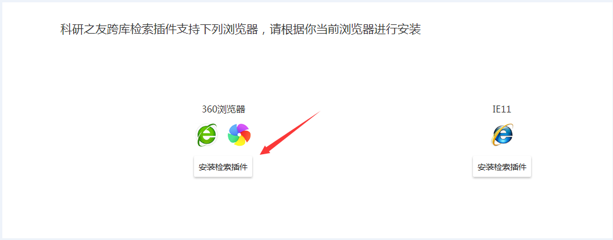
（3）点击安装IrisSearch。
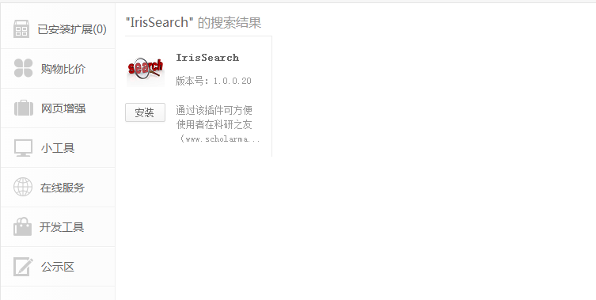
（4）点击添加按钮。
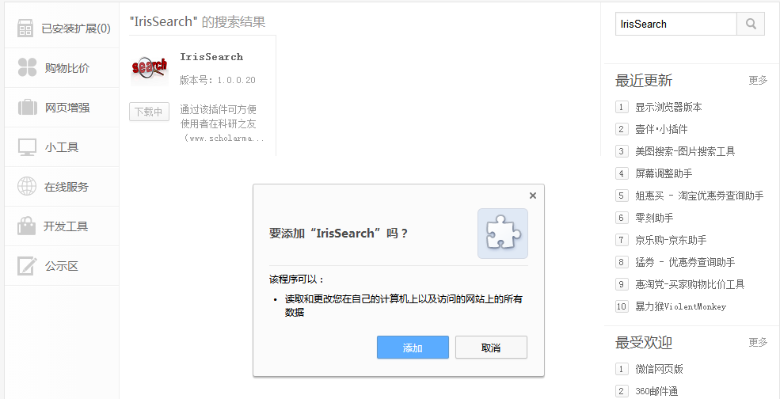
（5）IrisSearch添加完成后,就可以去检索页面检索了。
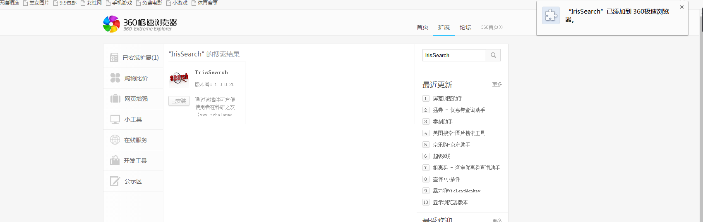
4. 如何卸载跨文献库检索工具？
卸载跨文献库检索工具，请点击“开始->控制面板->添加或删除程序”，选择“跨文献库检索工具1.0.x.x”(后面的版本号可能因不同版本而不同)，并点击“更改/删除”按钮卸载。
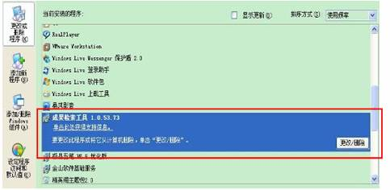
5. 如何升级跨文献库检索工具？
如果有最新的跨文献库检索工具发布，系统会主动提示用户升级到最新版的跨文献库检索工具。请按照屏幕提示操作进行升级。
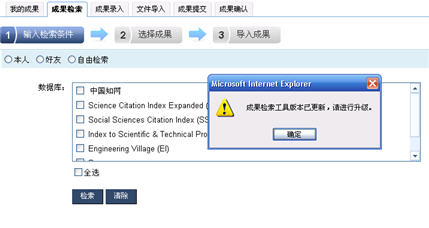
6. 跨文献库检索工具系统需求和支持的浏览器有哪些？
跨文献库检索工具目前兼容Win32各系列平台，包括Win2000、WinXP、Win2003、Vista及Windows7。跨文献库检索工具目前建议使用的浏览器有IE8(32位)、IE9(32位)、Firefox及Chrome。
7. 已经安装了检索工具，仍出现安装提示怎么办？
如果出现这情况，可能原因如下：
- IE禁用了安装的插件。请在“工具->管理加载项->启用或禁用加载项”查看IrisOctopus Class的加载项是否被禁用。如果是，
请启用，然后关闭IE重新打开。
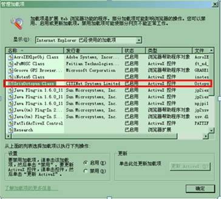 - IE安全级别。请在设置IE浏览器的安全级别：在“工具->Internet选项->安全->自定义级别”查看“对标记为可安全执行脚本的ActiveX控件执行脚本”的选项，请选中“启用”选项。同时确保将“下载已签名的控件”设“启用”。（提示：跨文献库检索工具经过严格测试和并经过专业认证机构的签名，不会对您的系统造成影响。）
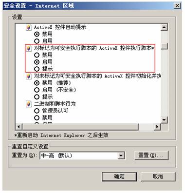
在打开“提示”执行ActiveX控件的情况下，浏览器可能会在加载控件的时候有如下提示，选择“运行ActiveX控件”。
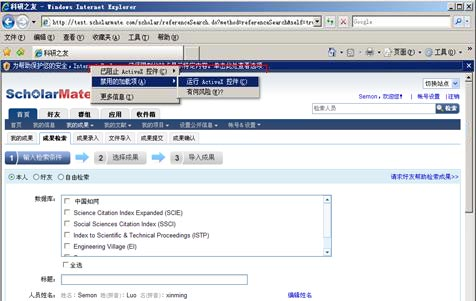
8. 系统无法安装跨文献库检索工具怎么办？
主要有以下原因：
- IE安全级别较高，请在“该区域安全级别”中将安全级别调到“中高”或中高以下级别。
- 安装成果检索工具时由于用户权限等原因可能会出现以下情况：
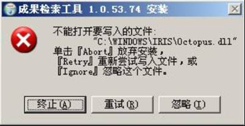
请尝试以下解决办法：
1）在Windows 7 或Windows 8 操作系统下，请确认是使用管理员权限运行安装程序。
2）确保所有的浏览器都已经被关闭。待浏览器关闭后再重试安装。
3）下载安装程序并保存至本地后重启计算机。重启后不要打开浏览器，直接运行安装程序。
如仍无法安装成果检索工具，请联系我们的“在线咨询”，或者发电子邮件到系统技术支持support@scholarmate.com。
跨文献库检索工具使用
1. 检索速度很慢或者长时间没有响应，如何解决？
由于检索工具会实时连接各个文献库的在线检索系统进行集成检索，需要用户机的网络环境能够稳定访问选定的文献库。因此，检索速度会由本机网络速度以及选定的文献库当时的运行情况决定，如果速度比较慢，建议联系 网络管理员或大学图书馆对网络连接情况、文献库运行情况进行检查，或稍候再重试。
2. 检索时，为何系统提示“您没有权限使用该数据库”？
您没有权限使用该数据库，可能是由于以下原因： 1）您所在的机构没有订购该数据库； 2）您的机构已订购，但您的IP网段无法使用该数据库； 3）所选数据库正在维护中，请稍候再试。 如果您检索结果出现以上提示，代表您当前所在IP网段没有对应文献库的使用权限。 目前科研之友系统提供检索的英文文献库，如：SCI，SSCI，ISTP，EI，都需要购买使用权限方能检索到结果，请确认贵校当前是否有购买。 如贵校有购买，则可能是以上列出提示的后两种，建议您在贵校图书馆登录成果在线进行检索；如贵校没有购买，建议在 购买了使用权限的单位进行检索或邀请好友帮您检索成果并推荐给您； 如果无法通过系统检索，您也可以通过手工录入的方式录入至系统中（我的成果——录入成果或文件导入）。
3. 检索时，为何系统提示“您所选数据库正在维护中”？
当文献库正处维护中时，即出现以下提示信息，请稍候再试。
4. 检索成果时，为何系统出现浏览器脚本错误，提示“指定资源下载失败”？
如果用户机器缺少了系统必需的MSXML组件，系统在检索时提示“指定资源下载失败”错误（参见下图）。请点击Microsoft MSXML
6.0，进入Microsoft下载页面完成安装后，再重新进入系统使用检索工具检索成果。
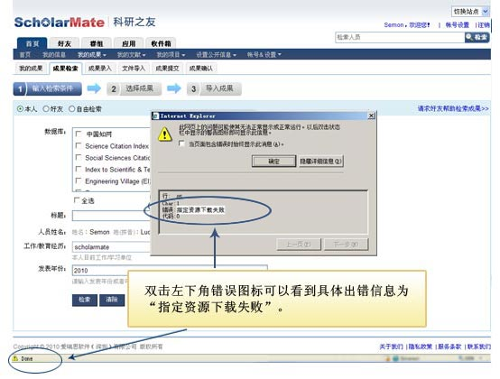
5. 检索时，为何系统提示“操作超时，请点击此处重试”？
当文献库返回信息超时时，即出现以下提示信息。请按照指示点击“此处”重试。

6. 检索时，为何系统提示“您所选数据库返回结果异常”？
由于检索工具会实时连接各个文献库的在线检索系统进行集成检索，而其中部分文献库（如: SCI、SSCI、ISTP和EI等）是收费文献库，需要用户所在单位购买文献库的使用权。如果单位没有购买，或者用户登录系统的IP不在 这些服务供应商所许可的IP段内，检索结果页面则会显示此提示信息，不能进行检索。若贵单位已够买了相应的文献库，请检查已输入的查询条件是否正确，若查询条件正确，但检索时系统仍提示“您所选数据库返回结果异 常”，请联系本系统的“在线咨询”，或者发电子邮件到本系统技术支持support@scholarmate.com。
7. 检索时，为何系统提示“查询异常，可能是服务器暂时无法连接”？
由于跨文献库检索工具会实时连接各个文献库的在线检索系统进行集成检索，各个文献库可能会个别查询返回查询失败等信息，检索工具会把对方文献库返回的出错信息原样显示，以便用户根据其指引对查询关键字进行改进。您 可以尝试重新输入查询条件，再次检索。
8. 如何检索SCI、SSCI、ISTP、EI，Scopus，万方文献库和中国期刊网之外的其它文献库？
目前支持SCI，SSCI，ISTP，EI，Scopus，万方文献库和中国期刊网，对其他文献库的支持，比如ScienceDirect，IEEE Xplore，维普资讯等正在逐步增加中。
9. 跨文献库检索工具收集的成果，是否会存在版权方面的问题？
科研之友中，无论是成果的导入还是录入，主要为了科研人员方便的管理与使用其科研成果，并不涉及任何商业目的。用户可以自行决定是否将自己的科研成果进行复制、传播。科研之友产品本身和爱瑞思公司不对科研之友 中成果的版权付任何相关及连带责任。
10. 为什么跨文献库检索工具检索不到我的论文或其他成果？
可能原因及建议如下：
- 确保在合适的文献库中检索你所需要的文献。如果贵单位没有购买相应的文献库，则无法检索到您的成果。
- 如果您的论文是近期发表的，可能还没被文献库收录。可以通过手工录入的方式来完成成果收集。
- 如果您确定成果被某个文献库收录，且贵单位也购买了该文献库，请点击【清除】按钮，清空所有查询条件，尝试用标题查找的方式 检索。如果仍然无法获取该成果，请联系本系统的“在线咨询”，或者发电子邮件到本系统 技术支持support@scholarmate.com。
11. 跨文献库检索工具是否能够检索尚未出版，但已被接受的科研成果？
这取决于文献库检索服务提供商。但对于SCI、SSCI、EI、ISTP，Scopus，万方文献库和中国期刊网一般不支持该项检索，您需要手工录入。
12. 为何无法看到系统教程和帮助中的检索进度条？
当IE浏览器设置了“不播放网页中动画”，则无法看到检索进度条。请在您的网页浏览器的【工具】选项卡下选择“Internet选项”，在“Internet选项”中选择“高级”，勾选中“在网页中播放动画”选项。
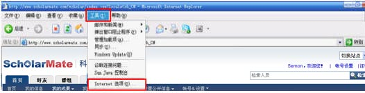
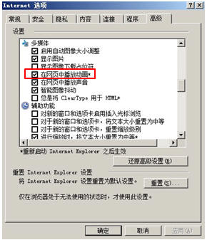
13. 如果成果导入不成功，如何解决？
如果成果导入不成功，请通过重复导入的方式来完成成果导入；如果重复导入也无法成功，请联系本系统的“在线咨询”，或者发电子邮件到本系统技术支持support@scholarmate.com。
14. 如果导入过程出现IE错误提示，如何解决？
检索或导入过程中，若弹出IE发生错误，需要关闭IE的提示。重新打开IE后即可以解决这个问题。
15. 如果导入过程中出现“数据提交不成功”的情况，如何解决？
如果用户机器中系统所需的MSXML组件已经被破坏或不能正常工作，则会导致检索结果导入过程中出现提示“数据提交不成功”（参见下图）。遇到这种问题，请点击Microsoft MSXML
6.0，进入Microsoft下载页面安装完成后 ，再重新进入系统使用检索工具检索成果。
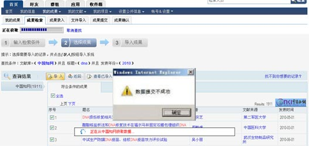
其 他:
1. 如何找到更多资源了解和使用“科研之友”？
您可以在首页的“帮助中心”中找到更多的资料了解和使用“科研之友”